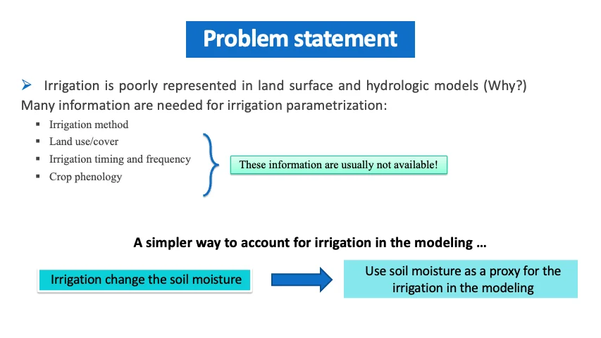

Food
×2 food demand by 2050, about 30% from population growth and 70% from diets richer in meat. Foley, 2015
2.3 bn people faced moderate or severe food insecurity in 2021. FAO, 2022
Water cycle · Human-driven processes
Farms take most of the fresh water people withdraw. Irrigation ties rivers, aquifers, soil and crops together, so modeling it well captures much of how people reshape the water cycle.
Why irrigation comes first
People manage water at almost every step of the cycle: they pump aquifers, run reservoirs, divert rivers, drain fields and supply cities. Each process follows human decisions, which large-scale water-cycle models still represent poorly.
That makes irrigation a strong place to start: modeling it well captures many of the broader ways people interact with the water system.
Why it matters
Feeding a growing world depends on irrigated farms, and irrigated farms depend on fresh water that is already scarce.

Fresh water is very limited
If all the world’s water were condensed into 100 litres, the fresh water we can use would be only half a teaspoon.
Salt water is 97.5% of the total; most of the 2.5% that is fresh is locked in ice or deep underground.
USGS, Where is Earth’s water?
×2 food demand by 2050, about 30% from population growth and 70% from diets richer in meat. Foley, 2015
2.3 bn people faced moderate or severe food insecurity in 2021. FAO, 2022

2× the harvest: irrigated land is at least twice as productive as the same area of rainfed land. World Bank
42% of the world’s irrigated area is in China and India.

70% of fresh water withdrawn worldwide goes to irrigation, over 90% in parts of the Middle East and Southeast Asia. Foley et al., 2011 Map: WRI Aqueduct
40% of irrigated land, and 60% in the US, relies on groundwater, and groundwater depletion roughly doubled from 1960 to 2000. Wada et al., 2010

70% of the land irrigated in 1995 will need more irrigation water by the 2070s. Döll & Siebert, 2002
41% of irrigation water is taken from rivers’ environmental flows, at a cost to ecosystems. Jägermeyr et al., 2017
Irrigation also changes the climate around it: rain, locally and downwindcooler hot daysa later monsoonhumid heat beyond human tolerance McDermid et al., 2023
The gap

Satellites revisit every field every few days. My work asks how much of the irrigation signal they can recover, and at what scale. It started with a shortcut: irrigation changes the soil moisture, so soil moisture can stand in for it.

From my talk · the problem statementIllustration: one landscape at four resolutions. The irrigation signal that a coarse pixel averages away becomes visible at 200 m.
My irrigation studies
It began with a signal that rainfall could not explain. Each study since answered a question the last one raised, so the work ran backward, from how much to when to where, and now comes full circle to how much with all three.
Studies from across the field that use satellite data or Earth system models to find where, when and how much farms irrigate. A small agent looks for new papers every week, and I review each one before it is added.
See the agent’s code on GitHub ↗
Loading studies
| Status | Questions answered | Data & code |
|---|
Collaborations on crops, yield and agricultural water management.